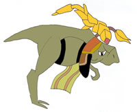
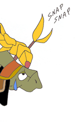
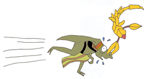

Seeker Beliefs
|
Mans Freedom
Wise Old Coolia: The Seekers believe the Tower and many other forms of ancient technology, are just running peoples lives, controlling mans destiny. Monsters kill unwanted humans, in order to control the population. People live in constant fear of bio-engenered horrors. The Seekers believe they are not truly living, but just being kept alive.
Young Energetic Coolia: Um, speaking of bio-engineered horrors.  Wise Old Coolia: What, is there something on my face?  Wise Old Coolia: Oh my.......  Wise Old Coolia: GOOOODDDD!!! HEEEEELP MEEEEE!!!!! Young Energetic Coolia: I wouldn't want to be in his shoes! (theres one behind me, isn't there!) |
Once all of the Towers are destroyed, mankind will be freed from the will of the Ancients. |
Monsters kill humans, to control the population. |


The Divine Visitor
Wise Old Coolia: Like the Hunters, the Seekers also have a religious belief in the Dragon. To the Seekers, the Dragon is the Divine Visitor, a being who has the power to bring an end to the horrors of the Ancient Age. The Dragon is their only hope for true freedom. With its arrows of divine light, it can bring forth salvation, the freedom from the ominous clutches of the Ancients.
Young Energetic Coolia: Wow, I wish I had the power to shoot down arrows of divine light!
Wise Old Coolia: Your throat, it just glowed!
Young Energetic Coolia: Huh, what are you talking about? My throat is not glowing.
Wise Old Coolia: It must have been my imagination. |
The Seekers believe the Dragon is the Divine Visitor, but could this glowing ball of light that went into Edge at the beginning of PDS, be the Divine Visitor? |


The Statue of Souls
Wise Old Coolia: The Seekers have a special statue which they believe, contains the souls of deceased children. When children die, it is believed their souls rest within this statue.
Young Energetic Coolia: I don't want my soul to be trapped in a statue, if I die!
Wise Old Coolia: Well it's just a belief, calm down. |
This statue is said to contain the souls of deceased children. |